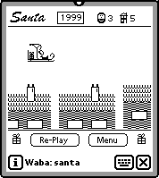

| Waba has a variety of controls, which it can display either with a Palm Pilot look or a WinCE look, depending on whether or not the user has requested to display in color/grayscale or black and white. Here's the Controls test app in both formats. | ||
| There are Waba packages for drawing in 3D and doing animation. | ||
| The Santa game requires you to drop presents into moving chimneys. The SuckOMeter tests whether something sucks or not. Thank goodness when I pointed it at the Waba for the Newton source code on my Powerbook, I was told that it does not suck! |  | |
| Koyomi displays the Japanese buddhist calendar. Timer provides a stopwatch. | ||
| Scribble lets you, er, scribble. Hanoi is the tower of hanoi program, written by our very own Steve Weyer. To see his JavaScript version of the same program, go here. | ||
|
| ||